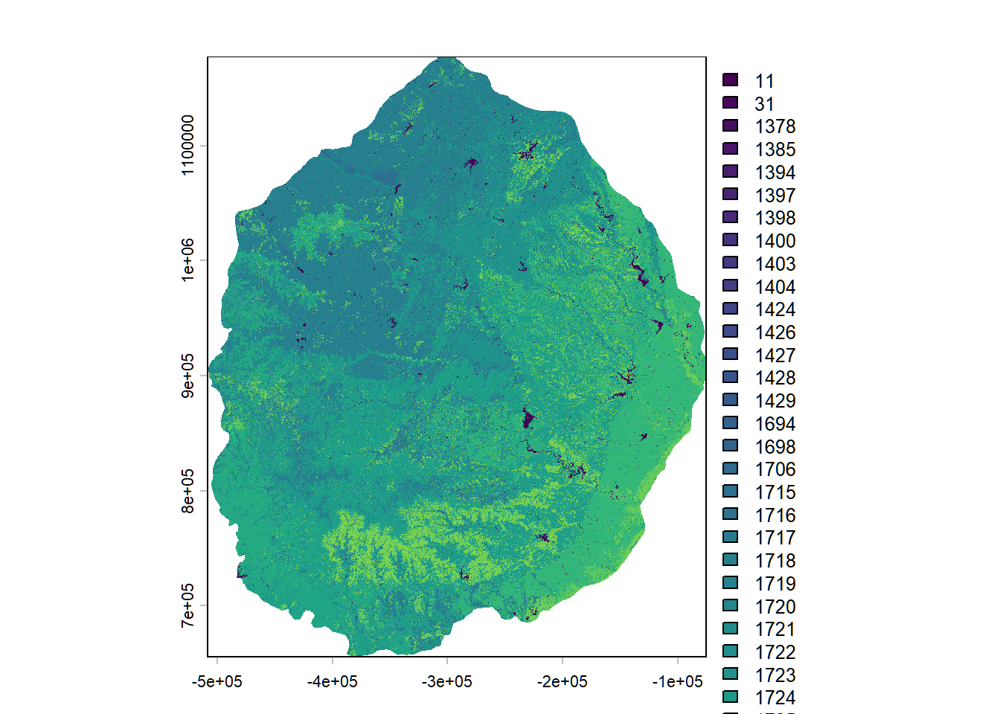

# install packages if needed
# install.packages("foreign")
# install.packages("sf")
# install.packages("terra")
# install.packages("tidyverse")
# load packages
library(foreign)
library(sf)
library(terra)
library(tidyverse)
# read in Area of Interest (aoi) shapefile, plot to check
shp <- st_read("inputs/map_zone_35.shp", quiet = TRUE) %>%
st_transform(crs = 5070) %>%
st_union() %>%
st_sf()
# read in .csv of CONUS-wide attributes for later joining to AoI BpS table
bps_conus_atts <- read_csv("inputs/LF20_BPS_220.csv")
# another way is directly from landfire.gov
# bps_url <- "https://landfire.gov/sites/default/files/CSV/LF2016/LF16_BPS.csv" # will likely get warning, but it's OK
# bps_conus_atts <- read.csv(bps_url)
evt_conus_atts <- read_csv("inputs/LF23_EVT_240.csv")
# evt_url <- "https://landfire.gov/sites/default/files/CSV/2024/LF2024_EVT.csv" # will likely get warning, but it's OK
# evt_conus_atts <- read.csv(evt_url)
# look at the first few rows of the CONUS-wide attribute tables
print(head(bps_conus_atts))
print(head(evt_conus_atts))Clip and prep LANDFIRE rasters
Skills learned
Use this page to: - Clip LANDFIRE data to a specific landscape (for this example, Mapzone 34)
- Crop, mask and build attribute table for the area then write the files to our ‘outputs’ folder for later use
Set up
To run the code below you will need to:
- Follow the set up instructions and run the code on the Download data page, or similar for your landscape and LANDFIRE datasets of interest.
- Create a new script for the following code.
Once this set up is complete, you should be able to copy/paste the code below into the r script you created above.
Code to load packages and inputs
Crop, mask and split out the raster layers
Now that we have LANDFIRE data for the extent of our area of interest, we need to crop/mask it to the exact area of interest, build the raster attribute table and do a few calculations:
- First, we load our stacked raster data from the file landfire_data.tif.
- Next, we crop and mask this raster using a shapefile to focus on our area of interest.
- We then plot the cropped and masked raster to visualize our area of interest.
- We set the levels of the raster to match our attribute data and specify the active category.
Extracting and Processing Values: We extract values from the raster, remove any NA values, and convert the data into a dataframe. This dataframe is then processed to create a frequency table, which is further refined and joined with the raster categories.
Saving the Results: Finally, we save the processed raster and the attributes dataframe to files for future use.
# load in landfire stacked raster
stacked_rasters <- rast("inputs/landfire_data.tif")
# crop and mask stacked raster
aoi_stacked_rasters <- stacked_rasters %>%
crop(shp) %>%
mask(shp)
# "split" cropped and masked stacked raster into separate layers
for(lyr in names(aoi_stacked_rasters)) assign(lyr, aoi_stacked_rasters[[lyr]])Build Raster Attribute Table for Biophysical Settings Data, write files
#| label: Build Raster Attribute Table for Biophysical Settings Data, write files
#| echo: true
#| message: false
#| warning: false
#| code-overflow: wrap
#| include: true
#| results: hide
#| eval: false
# Assign categories
levels(US_200BPS) <- bps_conus_atts
activeCat(US_200BPS) <- "VALUE"
# Get frequency table
bps_freq <- freq(US_200BPS) %>%
as.data.frame()
# Join with attributes and calculate acres and percent
bps_aoi_atts <- bps_freq %>%
rename(VALUE = value, COUNT = count) %>%
mutate(VALUE = as.integer(VALUE)) %>%
left_join(bps_conus_atts, by = "VALUE") %>%
filter(COUNT != 0) %>%
mutate(
ACRES = round((COUNT * 900 / 4046.86), 0),
REL_PERCENT = round((COUNT / sum(COUNT)) * 100, 3)) %>%
arrange(desc(REL_PERCENT)) %>%
select(-layer) # Optional: remove 'layer' column
# write the raster to a file with specified options
writeRaster(US_200BPS, "outputs/bps_aoi.tif",
gdal = c("COMPRESS=NONE", "TFW=YES"),
datatype = "INT2S",
overwrite = T)
|---------|---------|---------|---------|
=========================================
# write the attributes dataframe to a dbf file
write.dbf(bps_aoi_atts, "outputs/bps_aoi.tif.vat.dbf")
# write the attributes dataframe to a csv file
write.csv(bps_aoi_atts, "outputs/bps_aoi_attributes.csv")
# plot the cropped and masked raster-will just show values in the map. Output not shown here.
plot(US_200BPS)
# look at the first few rows of the aoi attributes. Output not shown here.
print(head(bps_aoi_atts)) VALUE COUNT BPS_CODE ZONE BPS_MODEL
1 1718 46439852 11320 35 11320_32_34_35
2 1725 44125598 13830 35 13830_32_35_36
3 1728 16449562 13930 35 13930_32_35
4 1730 13609703 14220 35 14220_32_35_36_37
5 1723 11475228 13080 35 13080_32_35
6 1737 10387249 15230 35 15230_32_35
BPS_NAME GROUPVEG FRI_REPLAC
1 Central Mixedgrass Prairie Grassland 7
2 Edwards Plateau Limestone Savanna and Woodland Hardwood 15
3 Edwards Plateau Limestone Shrubland Conifer 69
4 Southern Blackland Tallgrass Prairie Grassland 3
5 Crosstimbers Oak Forest and Woodland Hardwood 158
6 Edwards Plateau Dry-Mesic Slope Forest and Woodland Hardwood 103
FRI_MIXED FRI_SURFAC FRI_ALLFIR PRC_REPLAC PRC_MIXED PRC_SURFAC FRG_NEW R
1 44 21 5 65 12 23 I-A 112
2 24 14 6 38 23 39 I-B 209
3 44 -9999 27 39 61 -9999 I-C 255
4 171 35 2 91 2 7 II-A 255
5 93 5 5 3 5 92 I-A 137
6 133 30 20 19 15 66 I-C 102
G B RED GREEN BLUE ACRES REL_PERCENT
1 168 112 0.439216 0.658824 0.439216 10327974 26.029
2 255 115 0.819608 1.000000 0.450980 9813297 24.732
3 203 125 1.000000 0.796078 0.490196 3658295 9.220
4 127 127 1.000000 0.498039 0.498039 3026725 7.628
5 90 68 0.537255 0.352941 0.266667 2552029 6.432
6 255 171 0.400000 1.000000 0.670588 2310069 5.822Build Raster Attribute Table for Existing Vegetation Type Data, write files
# Assign categories
levels(US_240EVT) <- evt_conus_atts
activeCat(US_240EVT) <- "VALUE"
# Get frequency table
evt_freq <- freq(US_240EVT) %>%
as.data.frame()
# Join with attributes and calculate acres and percent
evt_aoi_atts <- evt_freq %>%
rename(VALUE = value, COUNT = count) %>%
mutate(VALUE = as.integer(VALUE)) %>%
left_join(evt_conus_atts, by = "VALUE") %>%
filter(COUNT != 0) %>%
mutate(
ACRES = round((COUNT * 900 / 4046.86), 0),
REL_PERCENT = round((COUNT / sum(COUNT)) * 100, 3)
) %>%
arrange(desc(REL_PERCENT)) %>%
select(-layer) # Optional: remove 'layer' column
# write the raster to a file with specified options
writeRaster(US_240EVT, "outputs/evt_aoi.tif",
gdal = c("COMPRESS=NONE", "TFW=YES"),
datatype = "INT2S",
overwrite = T)
# write the attributes dataframe to a dbf file
write.dbf(evt_aoi_atts, "outputs/evt_aoi.tif.vat.dbf")
# write the attributes dataframe to a csv file
write.csv(evt_aoi_atts, "outputs/evt_aoi_attributes.csv")
# plot the cropped and masked raster-will just show values in the map. Output not shown here.
plot(US_240EVT)
# look at the first few rows of the aoi attributes. Output not shown here.
print(head(evt_aoi_atts))Next steps
You can now open up the processed raster(s) in ArcGIS pro and/or QGIS to do further GIS. This process really shines when you do multiple LANDFIRE datasets at once and/or process data for multiple landscapes. Further, you can work in Excel, R or other software to make charts of the attributes that are saved as a .csv file. Go to the Make Charts page to get started.
While we are sure it is possible to make attractive, accessible maps with the processed LANDFIRE rasters in R, we typically move to a different GIS software for mapping, or summarize the data by polygons (e.g., watersheds or hexagons) in R. Try the code on the Make hex map for ways you might map LANDFIRE data in R.